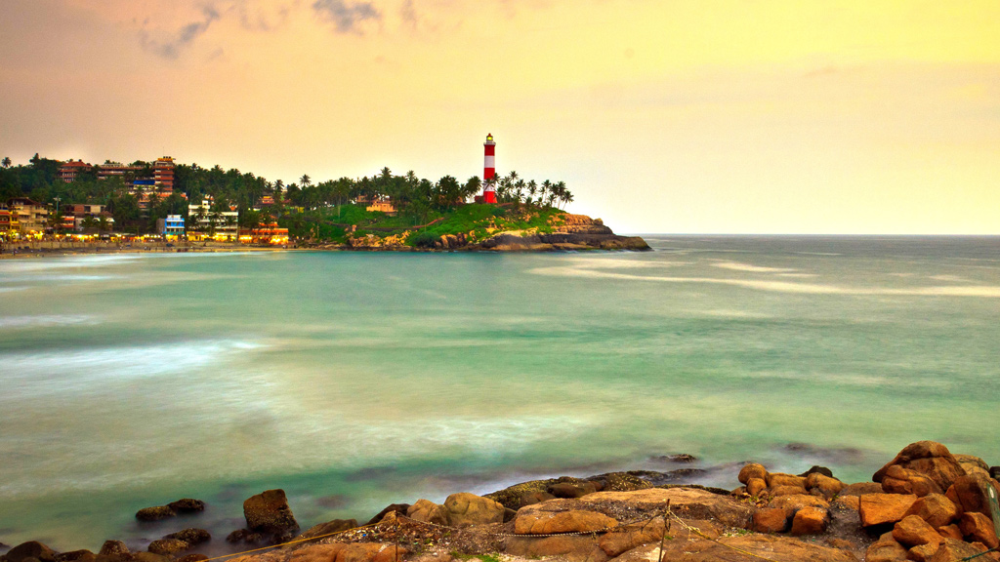

THIRUVANANTHAPURAM

The capital city of God's Own Country, Thiruvananthapuram or Trivandrum, or the 'Evergreen City of
India'
is also the largest city in the state. Located at the south-western edge of Kerala, this city is
the
perfect example of how rural life gets mixed with the contemporary way of living.
Dotted with numerous tourist spots, places of historical importance, scenic beaches, and much
more,
Trivandrum is a true treasure trove among visitors from all the walks of life. Rated as one of
the
finest Indian cities to live in, Thiruvananthapuram can also be called the 'Economic Capital' of
Kerala.
The present regions that constitute Thiruvananthapuram were ruled by the Ays who were
feudatories of the
Chera dynasty.In the 12th century, it was conquered by the Kingdom of Venad.In the 18th
century, the king Marthanda Varma expanded the territory, founded the princely state of
Travancore, and
made Thiruvananthapuram its capital.Travancore became the most dominant state in Kerala by
defeating the powerful Zamorin of Kozhikode in the battle of Purakkad in 1755. Following India's
independence in 1947, Thiruvananthapuram became the capital of Travancore-Cochin state and
remained so
until the new Indian state of Kerala was formed in 1956.
Thiruvananthapuram is a notable academic and research hub and home to the University of Kerala,
APJ
Abdul Kalam Technological University, the regional headquarters of Indira Gandhi National Open
University, and many other schools and colleges. Thiruvananthapuram is also home to research
centers
such as the National Institute for Interdisciplinary Science and Technology, Indian Space
Research
Organisation's Vikram Sarabhai Space Centre, the Indian Institute of Space Science and
Technology,
National Centre for Earth Science Studies and a campus of the Indian Institutes of Science
Education and
Research.The city is home to media institutions like Toonz India Ltd and Tata Elxsi Ltd, and is
also home to Chitranjali Film Studio, one of the first film studios in Malayalam Cinema, and
Kinfra Film
and Video Park at Kazhakoottom, which is India's first Infotainment industrial park.
ALAPPUZHA

Alappuzha or Alleppey is the administrative headquarters of Alappuzha
district in state of Kerala, India. The Backwaters of Alappuzha are one of the most popular
tourist
attractions in India which attracts millions of domestic and international tourists.
Alleppey is a city and a municipality in Kerala with an urban population of 174,164 and ranks
third
among the districts in literacy rate in the state. In 2016, the Centre for Science and
Environment rated
Alappuzha as the cleanest town in India.Alappuzha is considered to be the oldest planned city in
this region and the lighthouse built on the coast of the city is the first of its kind along the
Laccadive Sea coast.
The city is 55 km from Kochi and 155 km north of Thiruvananthapuram.A town with canals,
backwaters,
beaches, and lagoons, Alappuzha was described by George Curzon, Viceroy of India at the start of
the
20th century, as the "Venice of the East."Hence, it is known as the "Venetian Capital" of
Kerala.
It is an important tourist destination in India.It connects Kumarakom and Cochin to the North
and
Kollam to the South. It is also the access point for the annual Nehru Trophy Boat Race, held on
the
Punnamada Lake, near Alappuzha, on the second Saturday of August every year. This is amongst the
most
popular and competitive boat races in India.
Alappuzha was home to the Punnapra-Vayalar uprising against the Separate American Model
independent
Travancore proposal and also the revolt against the Feudal raj. Over 200 Communist party members
were
killed by the army of the Diwan at Punnapra.Coir is the most important commodity manufactured in
Alappuzha.The Coir Board was established by the Central Government under the provisions of the
Coir
Industry Act, 1955. A Central Coir Research Institute is located at Kalavoor.
WAYANAD

Wayanad is a district in the north-east of the Indian state of Kerala, with
administrative headquarters at the municipality of Kalpetta. It is the only plateau in
Kerala.The
Wayanad Plateau forms a continuation of the Mysore Plateau, the southern portion of Deccan
Plateau which
links the Western Ghats with the Eastern Ghats. It is set high in the Western Ghats with
altitudes
ranging from 700 to 2100 meters.Vellari Mala, a 2,240 m (7,349 ft) high peak situated on the
trijunction of Wayanad, Malappuram, and Kozhikode districts, is the highest point in Wayanad
district.
The district was formed on 1 November 1980 as the 12th district in Kerala, by carving out areas
from
Kozhikode and Kannur districts. An area of 885.92 km2 of the district is forested.Wayanad has
three
municipal towns—Kalpetta, Mananthavady and Sulthan Bathery. There are many indigenous tribes in
this
area.The Kabini River, a tributary of Kaveri River, originates at Wayanad. Wayanad district,
along with the Chaliyar valley in neighbouring Nilambur (Eastern Eranad region) in Malappuram
district,
is known for natural gold fields,which are also seen in other parts of the Nilgiri Biosphere
Reserve. Chaliyar river, which is the fourth longest river of Kerala, originates on the Wayanad
plateau.
The historically important Edakkal Caves are located in Wayanad district.
Wayanad district is bordered by Karnataka (Kodagu and Mysore districts) to the north and
north-east,
Tamil Nadu (Nilgiris district) to the south-east, Malappuram to the south, Kozhikode to the
south-west
and Kannur to the north-west.Pulpally in Wayanad boasts the only Lava-Kusha temple in Kerala and
Vythiri has the only mirror temple in Kerala, which is a Jain temple. Varambetta mosque is the
oldest
Muslim mosque of Wayanad. People of Wayanad live in absolute harmony with each other. Wayanad is
famous
for its role in the Cotiote War, where Pazhassi Raja with the help of the Kurichya tribe in
association
with Hindus and Muslims of the Malabar region launched a revolt against the British.
Kaniyambetta and
Muttil Panchayaths are the centrally located Panchayaths with the best access from all corners
of
Wayanad, while Tavinjal Panchayath is on the northeast border with Kannur district. The edicts
found in
the caves of Ambukuthi Mala are evidence that occupation dates from the beginning of the New Age
Civilisation.
COCHIN

Kochi also known by its former name Cochin, is a major port city on the Malabar Coast of India
bordering
the Laccadive Sea. It is part
of the district of Ernakulam in the state of Kerala and is commonly referred to as Ernakulam.
Kochi is
the most densely populated city in Kerala. As of 2011, it has a corporation limit population of
677,381 within an area of 94.88 km2 and a total urban population of more than of 2.1 million
within
an area of 440 km2, making it the largest and the most populous metropolitan area in Kerala.
Kochi city
is also part of the Greater Cochin region and is classified as a Tier-II city by the Government
of India. The civic body that governs the city is the Kochi Municipal Corporation, which was
constituted
in the year 1967, and the statutory bodies that oversee its development are the Greater Cochin
Development Authority (GCDA) and the Goshree Islands Development Authority (GIDA).The current
metropolitan limits of Kochi include the mainland Ernakulam, Fort Kochi, the suburbs of
Edapally,
Kalamassery, Aluva and Kakkanad to the northeast; Tripunithura to the southeast; and a group of
islands
closely scattered in the Vembanad Lake.kochi also Called the "Queen of the Arabian Sea," Kochi
was an important spice trading center on the west coast of
India from the 14th century onward, and maintained a trade network with Arab merchants from the
pre-Islamic era. In 1505, the Portuguese established trading ports in Cochin. There are still
buildings
like the Old Harbour House from this period, some of which have been renovated in more recent
times. The
Kingdom of Cochin allied with the Ming Dynasty, Portuguese, and Dutch and became a princely
state of the
British. Kochi ranks first in the total number of international and domestic tourist arrivals in
Kerala.The city was ranked the sixth best tourist destination in India according to a survey
conducted by the Nielsen Company on behalf of the Outlook Traveller magazine.In October 2019,
Kochi
was ranked seventh in Lonely Planet's list of top 10 cities in the world to visit in 2020.Kochi
was one of the 28 Indian cities among the emerging 440 global cities that will contribute 50% of
the
world GDP by 2025, in a 2011 study done by the McKinsey Global Institute.In July 2018, Kochi was
ranked the topmost emerging future megacity in India by global professional services firm JLL.
Kochi is the only city in the country to have water metro system along with the metro rail.
Kochi is known as the financial,commercialand industrial capital of Kerala. It
has the highest GDP as well as the highest GDP per capita in the state.The city is home to the
Southern Naval Command of the Indian Navy and is the state headquarters of the Indian Coast
Guard with an attached air squadron, named Air Squadron 747.Commercial maritime facilities of
the
city include the Port of Kochi, an International Container Transshipment Terminal, the Cochin
Shipyard,
offshore SPM of the BPCL Kochi Refinery and the Kochi Marina. Kochi is home for the
International
Pepper Exchange, Marine Products Export Development Authority, Coconut Development Board,
companies like
HMT, Apollo Tyres, FACT, IREL, Petronet LNG, Kochi Refineries, V-Guard and industrial parks like
the
Cochin Special Economic Zone, Smart City, Infopark and Kinfra Hi-Tech Park. Kochi is home for
the High
Court of Kerala and Lakshadweep, Naval Physical and Oceanographic Laboratory, Indian Maritime
University, Sree Sankaracharya Sanskrit University and the Cochin University of Science and
Technology,
and National University of Advanced Legal Studies. Kochi was earlier home to Cochin Stock
Exchange
(CSE).
KOVALAM

Kovalam is an internationally renowned beach with three adjacent crescent beaches. It has been a
favourite haunt of tourists since the 1930s. A massive rocky promontory on the beach has created
a beautiful bay of calm waters ideal for sea bathing.
The leisure options at this beach are plenty and diverse. Sunbathing, swimming, herbal body
toning massages, special cultural programmes and catamaran cruising are some of them. The
tropical sun acts so fast that one can see the faint blush of coppery tan on the skin in a
matter of minutes. Life on the beach begins late in the day and carries on well into the night.
The beach complex includes a string of budget cottages, Ayurvedic health resorts, convention
facilities, shopping zones, swimming pools, Yoga and Ayurvedic massage centres.
Accommodation facilities for tourists at Kovalam range from five star hotels to budget hotels
and the choice of food available at restaurants and cafeterias range from Continental varieties
to South Indian delicacies.
Thiruvananthapuram, the capital city of Kerala, is just 16 km away from Kovalam and getting
there is no hassle. But if you are on holiday it is better to stay in Kovalam and visit the
city. The city of Thiruvananthapuram has many interesting places to see like the Napier Museum,
the Sri Chitra Art Gallery and the Padmanabhaswamy Temple. The SMSM Institute, a State owned
handicrafts emporium, is the ideal place to pick up ethnic curios and other articles.
KOLLAM

Kollam,also known by its former name Quilon pronunciation, is an ancient
seaport and city on the Malabar Coast of India bordering the Laccadive Sea, which is a part of
the Arabian Sea.It is 71 km north of the state capital Thiruvananthapuram.The
city is on the banks of Ashtamudi Lake and the Kallada river.Kollam is the fourth
largest city in Kerala and is known for cashew processing and coir manufacturing.It is
the southern gateway to the Backwaters of Kerala and is a prominent tourist destination.
Kollam is one of the most historic cities with continuous settlements in India.The
Malayalam calendar (Kollavarsham) is also known so with the name of the city Kollam.
Geographically, Quilon formation seen around coastal cliffs of Ashtamudi Lake, represent
sediments laid down in the Kerala basin that existed during Mio-Pliocene times.
Kollam has a strong commercial reputation since ancient times. The Arabs, Phoenicians, Chinese,
Ethiopians, Syrians, Jews, Chaldeans and Romans have all engaged in trade at the port of Kollam
for millennia.As a result of Chinese trade, Kollam was mentioned by Ibn Battuta in the 14th
century as one of the five Indian ports he had seen during the course of his twenty-four-year
travels.Desinganadu's rajas exchanged embassies with Chinese rulers while there was a
flourishing Chinese settlement at Kollam.
In the ninth century, on his way to Canton, China,
Persian merchant Sulaiman al-Tajir found Kollam to be the only port in India visited by huge
Chinese junks. Marco Polo, the Venetian traveller, who was in Chinese service under Kublai Khan
in 1275, visited Kollam and other towns on the west coast, in his capacity as a Chinese
mandarin.Kollam is also home to one of the seven churches that were established by St
Thomas as well as one of the 10 oldest mosques believed to be found by Malik Deenar in Kerala.
V. Nagam Aiya in his Travancore State Manual records that in 822 AD two East Syriac bishops Mar
Sabor and Mar Proth, settled in Quilon with their followers. Two years later the Malabar Era
began (824 AD) and Quilon became the premier city of the Malabar region ahead of Travancore and
Cochin.Kollam Port was founded by Mar Sabor at Tangasseri in 825 as an alternative to
reopening the inland seaport of Kore-ke-ni Kollam near Backare (Thevalakara), which was also
known as Nelcynda and Tyndis to the Romans and Greeks and as Thondi to the Tamils.
Kollam city corporation received ISO 9001:2015 certification for municipal administration and
services.As per the survey conducted by the Economist Intelligence Unit (EIU) based on
urban area growth during January 2020, Kollam became the tenth fastest growing city in the world
with a 31.1% urban growth between 2015 and 2020.It is a coastal city and on the banks of
Ashtamudi Lake. The city hosts the administrative offices of Kollam district and is a prominent
trading city for the state. The proportion of females to males in Kollam city is second highest
among the 500 most populous cities in India.Kollam is one of the least polluted cities in
India.
During the later stages of the rule of the Chera monarchy in Kerala, Kollam emerged as the focal
point of trade and politics. Kollam continues to be a major business and commercial centre in
Kerala. Four major trading centers around Kollam are Kottarakara, Punalur, Paravur, and
Karunagapally. Kollam appeared as Palombe in Mandeville's Travels, where he claimed it contained
a Fountain of Youth.
VAGAMON

Vagamon is a hill station located in Kottayam- Idukki border of Kerala. It has a cool climate with
the
temperature between 10-23°C during a summer midday. It is situated 1,100 metres above sea level.
Vagamon is a tiny plantation township in Central Travancore, Vagamon has an overtone of green.
With a
never-ending line of lush green hills, breathtaking ravines and meandering rivulets. A perfect
tourist
place situated 1200 meters above the sea level spot surrounded by the greenery of tea gardens ,
Fresh
cool air, murmuring Pine forest ,small waterfalls , attractive meadows inviting you to
vagamon.Reaching
Vagamon itself is an extraordinary experience. The meandering road to Vagamon is cut in solid
rock lined
with pine forests. And as you wind your way through green capped hills, the rolling plains come
into
view thousands of feet below you.
This tourist place also has to offer Thangal Para, the Indo-Swiss Project and Kurisumala Ashram.
Welcome
to a land which would make you come back again and again. So that you could rejuvenate yourself
and
cherish memories of this enchantingly beautiful land.
Vagamon hill station is comprised of a
beautiful
series of hillocks, valleys and cascading waterfalls that make it the ideal getaway for
tourists. Take a
walk along the narrow, mist covered zigzag roads that wind up the hills and experience true
bliss. For
adventure seekers, there is an option of trekking, para gliding or rock climbing.
The hill station has a chain of 3 beautiful hills called Thangal hill, Murugan hill and
Kurismala that
give an enchanting feel to this beautiful hill station. So visit Vagamon hill station to
experience
eternal bliss and peace of mind.The Vagamon hill station offers you a unique and different
environ in
comparison to other hill stations of Kerala. Besides, being abundant in natural beauty, the
place also
offers space for spiritual activities. The peaceful surroundings with cool and soft breeze
blowing
across the valley makes it a perfect place for meditation.
KOZHIKODE

Kozhikode also known as Calicut, is a city in the state of Kerala in southern India on the Malabar
coast. Kozhikode is the largest urban area in the state and 195th largest urban area in the world.
During classical antiquity and the Middle Ages, Kozhikode was dubbed the “City of Spices” for its
role
as the major trading point of Eastern spices. It was the capital of an independent kingdom ruled by
the
Samoothiris(Zamorins) in the Middle Ages and later the capital of the erstwhile Malabar district
under
British rule. Arab merchants traded with the region as early as 7th century, and Portuguese explorer
Vasco da Gama dropped anchor at Kozhikode on 20 May 1498, thus opening a trade route between Europe
and
Malabar. A Portuguese factory and fort functioned in Kozhikode for a short period (1511–1525, until
the
Fall of Calicut). The English landed in 1615 (constructing a trading post in 1665), followed by the
French (1698) and the Dutch (1752). In 1765, Mysore captured Kozhikode as part of its occupation of
the
Malabar Coast.
While the city has been known in history under different names, Malayalam speaking communities have
traditionally called it Kozhikode. Arab merchants called it Qāliqūṭ. Tamils called it Kallikkottai
while
for the Chinese it was Kalifo. Although the city’s official name is Kozhikode, in English it is
sometimes known by its anglicised version, Calicut. The word calico, a fine variety of hand-woven
cotton
cloth that was exported from the port of Kozhikode, is thought to have been derived from
Calicut.
Kozhikode is a town with a long recorded history. From time immemorial, the city has attracted
travellers with its prosperity. It has traded in spices like black pepper and cardamom with Jews,
Arabs,
Phoenicians, and Chinese for more than 500 years. As Kozhikode offered full freedom and security,
the
Arab and the Chinese merchants preferred it to all other ports. Kozhikode was the capital of Malabar
during the time of Sri Samoothiri Maharajas, who ruled the region before the British took over. The
city’s first recorded contact with Europe was when Vasco da Gama docked at Kappad (18 km north) in
May
1498, among the leaders of a trade mission from Portugal. He was received by Sri Samoothiri Maharaja
himself. Kozhikode and its suburbs formed part of the Polanad kingdom ruled by the Porlatiri. The
Eradis
of Nediyirippu in Eranad wanted an outlet to the sea, to initiate trade and commerce with the
distant
lands and after fighting with the king Polatthiri for 48 years conquered the area around
Panniyankara.
KASARAGOD

Kasaragod is a municipal town and administrative headquarters of Kasaragod
district in the state of Kerala, India. Established in 1966, Kasaragod was the first municipal town
in
the district. It is the northernmost district of Kerala and is also known as Saptha Bhasha Sangama
Bhoomi ('The Land of seven Languages').
Situated in the rich biodiversity of Western Ghats, it is known for the Chandragiri and Bekal Fort,
Chandragiri River, historic Kolathiri Rajas, natural environment of Ranipuram and Kottancheri Hills,
historical and religious sites like the Madiyan Kulom temple, Madhur Temple, Ananthapuram Lake
Temple
and Malik Deenar Mosque. The historic hill of Ezhimala is located on the southern portion of Kavvayi
Backwaters of Nileshwaram.
Kasaragod is located 90 km north of Kannur city corporation and 50 km south of the Mangalore.
Kasaragod
district has the maximum number of rivers in Kerala - 12.The town is located on the estuary where
the Chandragiri River, which is also the longest river in the district, empties into the Arabian
Sea.
Kasaragod is home to several forts, including Arikady fort, Bekal Fort, Chandragiri Fort, and
Hosdurg
Fort. Bekal Fort is the largest fort in Kerala. Talakaveri, which is home to Talakaveri Wildlife
Sanctuary where the 805 km long Kaveri river originates, is located closer to Ranipuram on the
Kerala-Karnataka border.
Robert Caldwell describes the extent of Malayalam in the 19th century as extending from Chandragiri
(fort and river) in the north to Neyyar river beyond Thiruvanantapuram in the south and from Malabar
Coast in the west to Western Ghats in the east besides the inhabited islands of Lakshadweep in the
Arabian Sea.
THRISSUR

Thrissur, formerly Trichur, also known by its historical name
Thrissivaperur, is a city and the headquarters of the Thrissur district in Kerala, India. It is the
third largest urban agglomeration in Kerala after Kochi and Kozhikode, and the 21st largest in
India.The city is built around a 65-acre hillock called the Thekkinkaadu Maidaanam which
seats a large Hindu Shiva Temple. It is located central of the state, and 304 kilometres
north-west of the state's capital city, Thiruvananthapuram. Thrissur was once the capital of the Kingdom
of Cochin, and was a point of contact for the Assyrians, Greeks, Persians, Arabs, Romans, Portuguese,
Dutch and English.
Thrissur is also known as the Cultural Capital of Kerala because of its cultural, spiritual and
religious leanings throughout history.The city centre contains the Kerala Sangeetha Nadaka Academy,
Kerala Lalithakala Akademi and Kerala Sahitya Academy.The city hosts the Thrissur Pooram festival,
the most colourful and spectacular temple festival in Kerala.The festival is held at the
Thekkinkadu Maidan in April or May, in the Malayalam month 'medam'.Religion is important and varied in Thrissur. The city has historically been a centre of Hindu
scholarship, and Christianity, Islam and Judaism are believed to have entered the Indian subcontinent
through Thrissur and its surrounding areas.
Thrissur has a large number of well-known temples including
the Vadakkumnathan temple, Thiruvambadi Sri Krishna Temple, and Paramekkavu temple. There are three
major Catholic churches, the St. Antony's Syro-Malabar Catholic Forane, Our Lady of Lourdes Syro-Malabar
Catholic Metropolitan Cathedral and Our Lady of Dolours Syro-Malabar Catholic Basilica, the largest
Christian church in India.India's first mosque, Cheraman Juma Masjid, is believed to have been
constructed in 629 CE.
The city is the headquarters of four major scheduled banks, South Indian Bank Ltd, Catholic Syrian Bank,
Dhanalakshmi Bank and ESAF Small Finance Bank as well as several chit funds.The city is also a
big centre for silks and gold jewellery. Thrissur attracts the largest number of domestic tourists in
Kerala.
Apart from being the cultural nerve centre of Kerala, it is also a major academic hub and is home to
several educational institutions including the Kerala Kalamandalam, Kerala Agricultural University,
Kerala University of Health Sciences, College of Veterinary and Animal Sciences, Sree Kerala Varma
College, St Thomas College, Jawahar Bal Bhavan Thrissur, Kerala Institute of Local Administration,
Kerala Forest Research Institute, Kerala Police Academy, Police Dog Training Centre, Kerala Fire and
Rescue Services Academy, Excise Academy and Research Centre, Government College Of Music And Performing
Arts, Government College of Fine Arts, Government Law College, Government Engineering College,
Government Medical College and Vaidyaratnam Ayurveda College.